⚠ FORMS MODULE TEST REPORT — FORM BUILDER & SUBMISSIONS
UAT Execution Report: FORMS Module
This test report covers the Forms module in ECMS. Key findings: Administrators can create forms, add input fields, and manage internal form settings. However, the public form link for external users to fill out forms has an issue and needs attention from the engineering team.
Total Scenarios
5
Checkpoints Verified
24
Functional Passed
17
Deviations
2
Confirmed Bugs
5
Not Executed (of 198 Script Rows)
~174
Scenario 1: MENU NAVIGATION & CREATE FORM PAGE
Rows 1-4
| Row | Steps to Reproduce | Expected Result | Actual Result (Live Execution) | Deviations & Defect Notes | Status | Screenshot Evidence |
|---|---|---|---|---|---|---|
| 1 | From the Menu click on Form |
Sub-menu: create form button and all form displayed
|
Sidebar "Forms" expands to "Create Form" and "All
Forms" — exact match.
|
None.
|
PASSED | 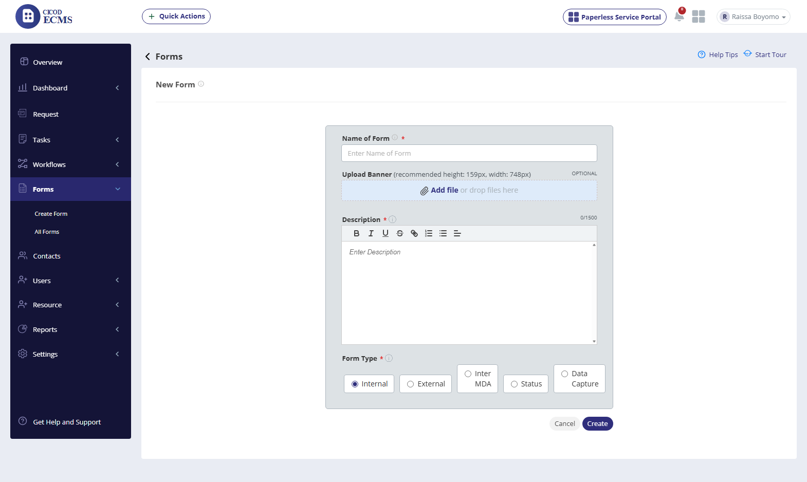 |
| 2 | Click on Create form sub-menu |
Should display Create form page
|
"New Form" page loads with Name, Upload Banner, Description (rich
text), and Form Type radio group.
|
None.
|
PASSED | DEVIATION NOTED |
| 3 | View Form Type radio group |
Internal / External / Inter MDA
|
Live UI offers 5 options: Internal, External, Inter MDA, Status, Data Capture —
two undocumented types beyond the script.
|
None (exceeds spec).
|
PASSED | DEVIATION NOTED |
Scenario 2: INTERNAL FORM CREATION & FIELD BUILDER
Rows 5-20
| Row | Steps to Reproduce | Expected Result | Actual Result (Live Execution) | Deviations & Defect Notes | Status | Screenshot Evidence |
|---|---|---|---|---|---|---|
| 4 | Enter name of form |
Should display name of the form
|
"UAT Internal Form 48736" accepted correctly.
|
None.
|
PASSED | |
| 5 | Enter description |
Description should be displayed
|
Quill rich text editor accepts text correctly; live character counter (54/1500)
updates.
|
None.
|
PASSED | 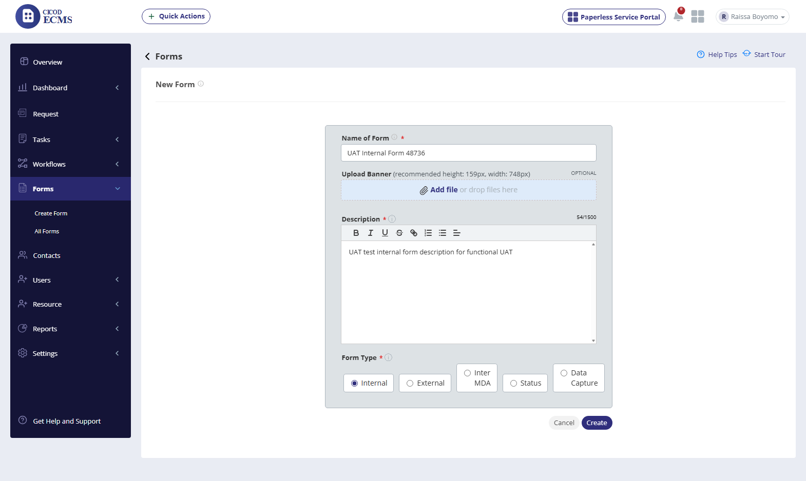 |
| 6 | Select a form type (Internal), click Create |
"form created successfully" message
|
Form created; redirected to Update Form (field-builder) page. Persisted data
confirms success.
|
None.
|
PASSED | 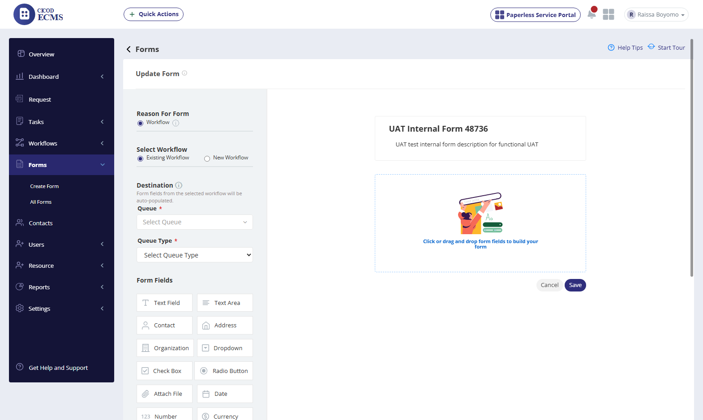 |
| 7 | Click and Select Queue |
Should display Queue
|
Dropdown opens with real queues (Complaints, Finance, HR, etc.);
"Complaints" selected successfully.
|
None.
|
PASSED | 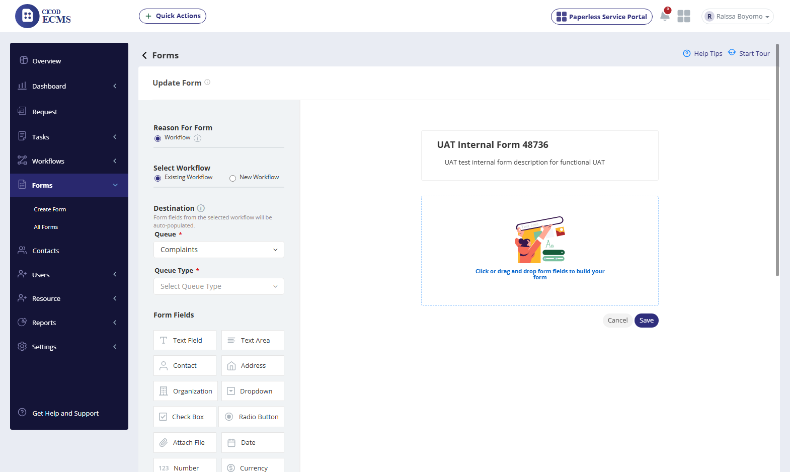 |
| 8 | Click and Select Queue Type |
Should display Queue Type
|
"Billing Issue" selected; form fields auto-populated from the linked
workflow (Contact/Title/Last Name/Email/Address) — working integration with Workflow module.
|
None (positive integration finding, undocumented).
|
PASSED | DEVIATION NOTED |
| 9 | Drag & drop form field |
Should display form field in the form page
|
Fields added via click (button), not native drag-and-drop — same pattern as
Workflow module. Config panel (Label, Required toggle) opens and saves correctly.
|
[Deviation]: script specifies drag-and-drop; live is click-to-configure.
|
PARTIAL / DEVIATION | 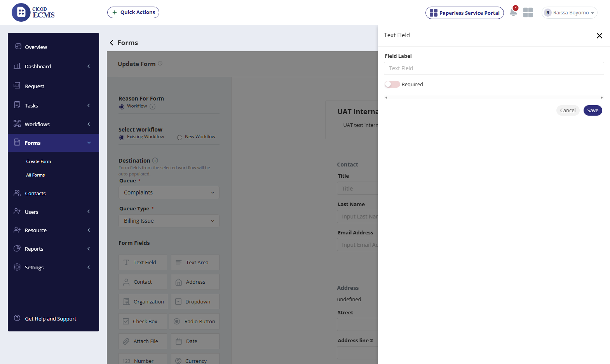 |
| 10 | View available field types |
Not detailed in script
|
20 field types available (Text Field, Text Area, Contact, Address, Organization,
Dropdown, Check Box, Radio Button, Attach File, Date, Number, Currency, Divider, Body, Section Title,
Distance, Dimension, Weight, Star Rating, Scale Rating, Add Image, Business Sector) — far exceeds script
scope.
|
None (exceeds spec).
|
PASSED | 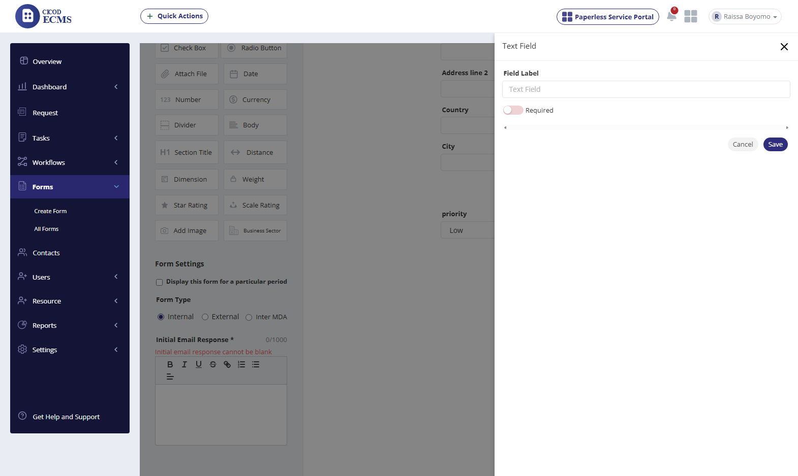 |
| 11 | Fill Initial Email Response (Form Setting) |
Should display email response message
|
Required rich-text field; validation correctly blocks save when blank
("Initial email response cannot be blank"); accepts text once filled.
|
None.
|
PASSED | |
| 12 | Click on Save |
"Created successfully"
|
"Updated Successfully" toast shown; redirected to All Forms list.
|
None.
|
PASSED | 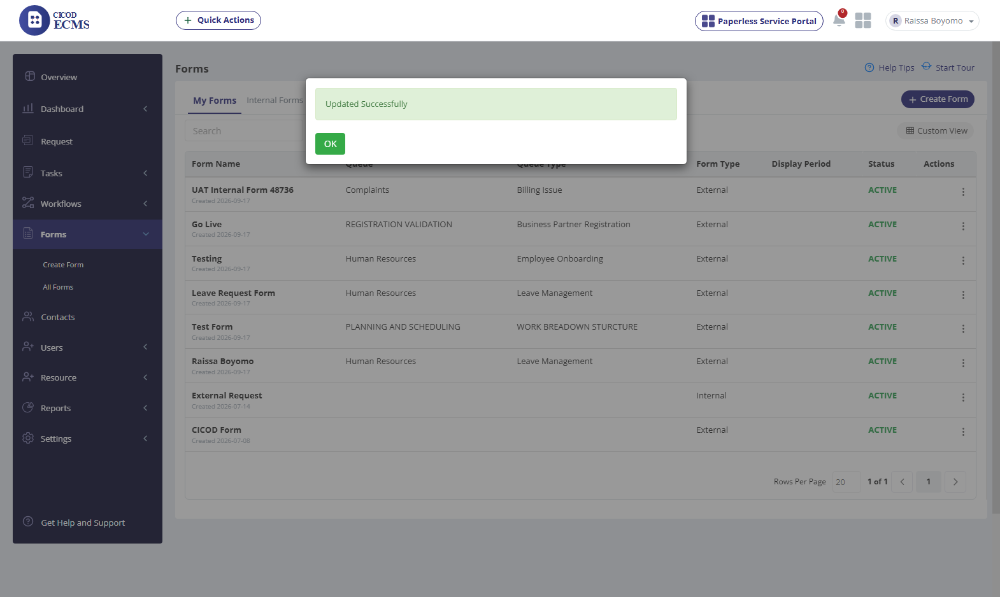 |
Scenario 3: ALL FORMS LIST & TYPE CLASSIFICATION DEFECT
All Forms List
| Row | Steps to Reproduce | Expected Result | Actual Result (Live Execution) | Deviations & Defect Notes | Status | Screenshot Evidence |
|---|---|---|---|---|---|---|
| 13 | Click on All form sub-menu, view forms created |
Display all form item
|
"My Forms" tab lists all 8 forms with Queue, Queue Type, Form Type,
Status, and Actions columns.
|
None.
|
PASSED | 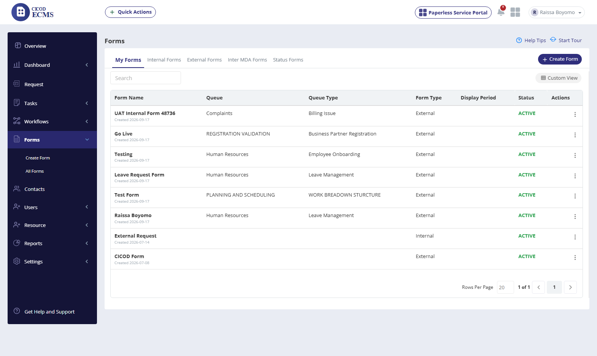 |
| 14 | Compare grid "Form Type" column to the form’s actual saved type |
Column should reflect the real type
|
CONFIRMED BUG: grid shows "External" for "UAT Internal Form
48736", but its own Update Form page confirms the radio is actually set to Internal.
|
[Defect]: Form Type display is unreliable.
|
CONFIRMED BUG | 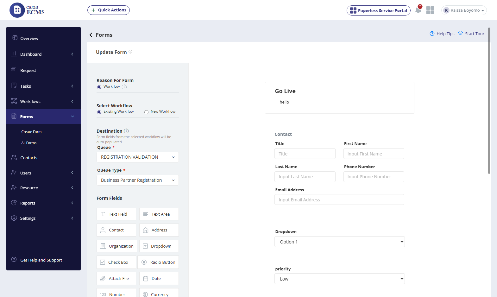 |
| 15 | Click the action button (⋮) on a form row |
Share, Update form, view form, Suspend form
|
Confirmed exact match: Share / Update Form / Suspend Form.
|
None.
|
PASSED | 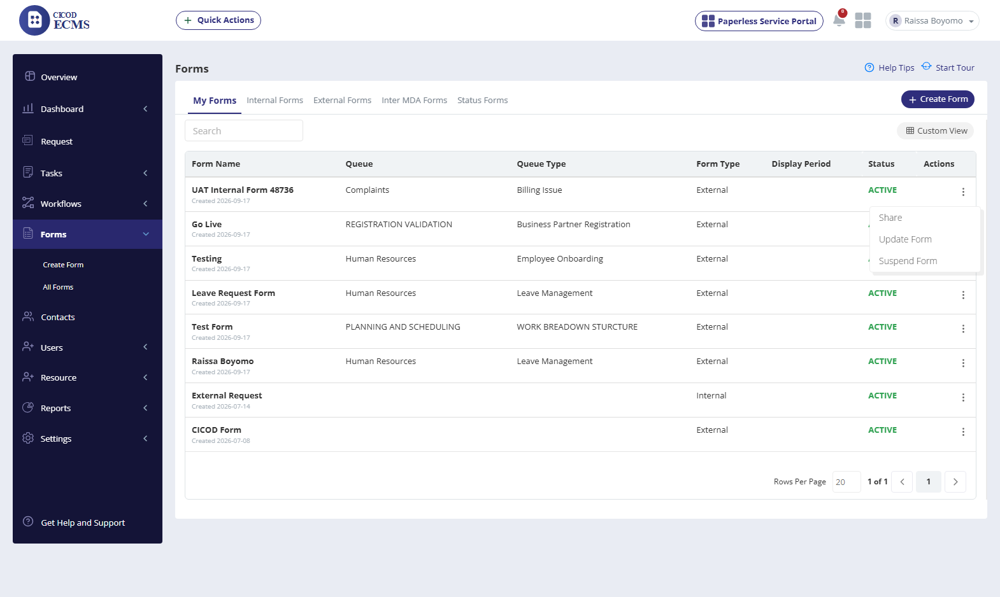 |
| 16 | Click "Internal Forms" tab, then "External Forms" tab |
Should filter forms by their real type
|
CONFIRMED BUG (same root cause as row 14): Internal Forms tab shows 0 results
despite a confirmed-Internal form existing; External Forms tab shows ALL 7 non-suspended forms,
including that same Internal one.
|
[Defect]: type filtering is broken platform-wide.
|
CONFIRMED BUG | 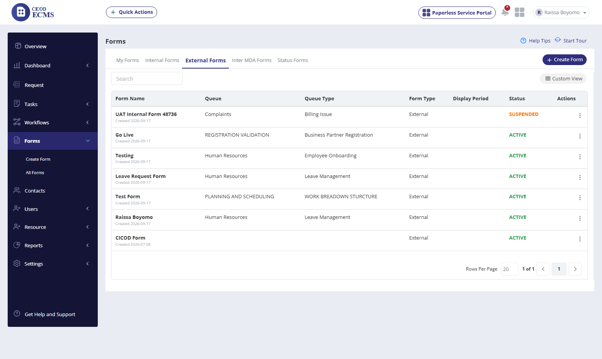 |
Scenario 4: SHARE FORM & PUBLIC FILL-FORM LINK (P0 DEFECT)
P0 Defect
| Row | Steps to Reproduce | Expected Result | Actual Result (Live Execution) | Deviations & Defect Notes | Status | Screenshot Evidence |
|---|---|---|---|---|---|---|
| 17 | Click on Share button |
Modal with shareable link and social channels
|
"Share form" modal confirmed with Link tab, Embed tab, and WhatsApp /
Facebook / Twitter / Email icons — matches all 4 scripted share channels.
|
None.
|
PASSED | 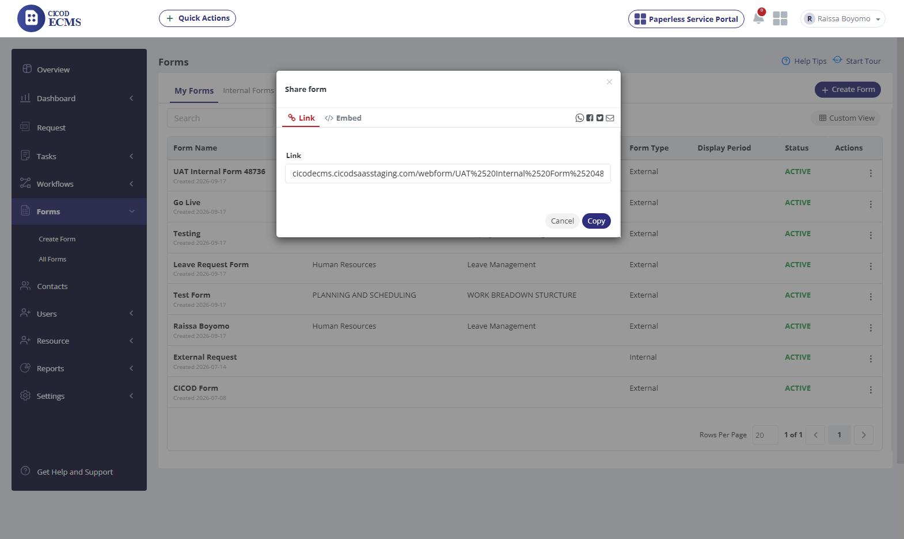 |
| 18 | Inspect the generated Link/Embed values |
Should point to a valid, well-formed URL
|
CONFIRMED BUG: spaces in the form name are double URL-encoded (%2520 instead of
%20) in both the Link field and the Embed iframe code.
|
[Defect - minor]: double-encoding bug.
|
CONFIRMED BUG | BUG CONFIRMED IN PREVIOUS STEP |
| 19 | Open the public share link (webform/<name>) |
Should display the external form to be filled
|
CONFIRMED BUG (High Priority): page shows "Unable To Load Form!" with a Reload
button. Reproduced with both the double-encoded and manually-corrected single-encoded URL, ruling out
encoding as the cause.
|
[Defect - P0]: full feature outage.
|
CONFIRMED BUG (High Priority) | 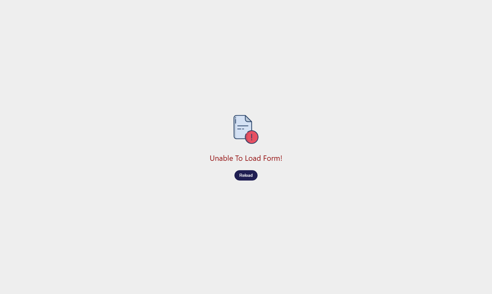 |
| 20 | Open the public share link for "CICOD Form" (pre-existing, created 2026-07-08) |
Should display that form to be filled
|
Same "Unable To Load Form!" error — confirms this is a platform-wide
outage, not specific to newly created test forms.
|
[Defect confirmed 2/2 — platform-wide]
|
CONFIRMED BUG (High Priority) |  |
Scenario 5: UPDATE FORM & SUSPEND / UNSUSPEND
Update / Suspend
| Row | Steps to Reproduce | Expected Result | Actual Result (Live Execution) | Deviations & Defect Notes | Status | Screenshot Evidence |
|---|---|---|---|---|---|---|
| 21 | Click on Update Form button |
Display Form page with fields to edit
|
Loads the same field-builder page, correctly pre-filled with Queue, Queue Type,
and existing fields.
|
None.
|
PASSED | 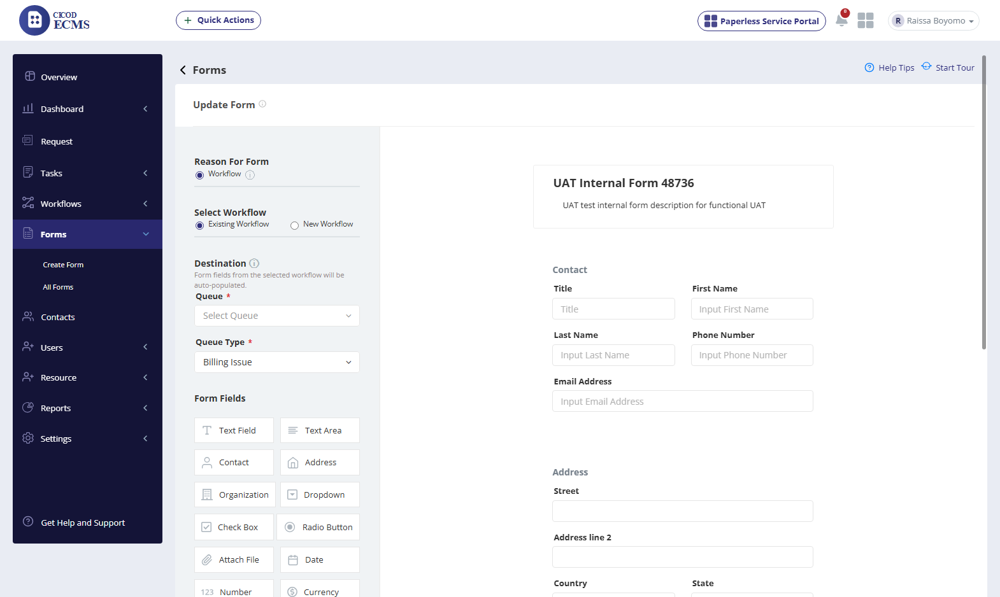 |
| 22 | Click on Suspend Form button |
"Suspended successfully"
|
Status column updates to SUSPENDED (orange) immediately, no confirmation dialog
required.
|
None.
|
PASSED | 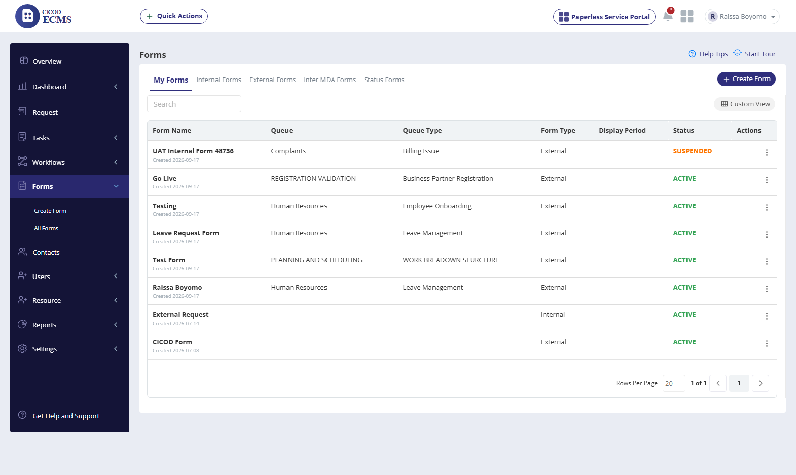 |
| 23 | Re-open the action menu on a suspended form |
Drop-down should now show Unsuspend Form
|
Confirmed: menu correctly swaps to Share / Update Form / Unsuspend Form.
|
None.
|
PASSED | |
| 24 | Click "Update Form" immediately after opening a row’s menu (automation note) |
Should open the same row’s form
|
First attempt opened the wrong row’s form ("Go Live" instead of the
target) due to a stray menu element left in the DOM. Not scored as a product defect; worth a manual
spot-check.
|
[Automation note, not scored as defect]
|
PARTIAL / DEVIATION | BUG CONFIRMED IN PREVIOUS STEP |
Not Executed This Session
~174 rows
| Row | Feature | Script Section | Script Reference | Reason Not Executed | Status | Evidence |
|---|---|---|---|---|---|---|
| — | NOT EXECUTED | Fill a Form (External) | As scripted (rows ~72-88) | Blocked entirely by the P0 defect (row 19/20) — public form never loads. | NOT EXECUTED | — |
| — | NOT EXECUTED | Fill a Form (Internal) | As scripted (rows ~89-105) | Blocked entirely by the P0 defect (row 19/20) — public form never loads. | NOT EXECUTED | — |
| — | NOT EXECUTED | Create External Form / Create Inter MDA Form | As scripted (rows ~21-56) | Not created this session — only Internal form type was exercised. | NOT EXECUTED | — |
| — | NOT EXECUTED | Update Internal Form / Update External Form (tab-specific) | As scripted (rows ~151-170) | Generic Update flow verified (row 21); tab-scoped variants not executed, and row 16’s tab-filter defect makes those tabs unreliable for locating forms. | NOT EXECUTED | — |
| — | NOT EXECUTED | Suspend Internal Form / Suspend External Form (tab-specific) | As scripted (rows ~171-184) | Generic Suspend flow verified (row 22); tab-scoped variants not executed. | NOT EXECUTED | — |
| — | NOT EXECUTED | Share Form via WhatsApp / Mail / Twitter / Facebook (destination flows) | As scripted (rows ~106-141) | Icons confirmed present (row 17); none of the 4 destination flows were clicked through to completion. | NOT EXECUTED | — |
| — | NOT EXECUTED | Status Forms tab / Data Capture form type | As scripted (not in script) | Both exist live but are entirely undocumented; not explored this session. | NOT EXECUTED | — |